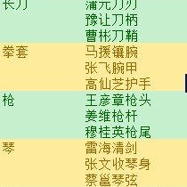
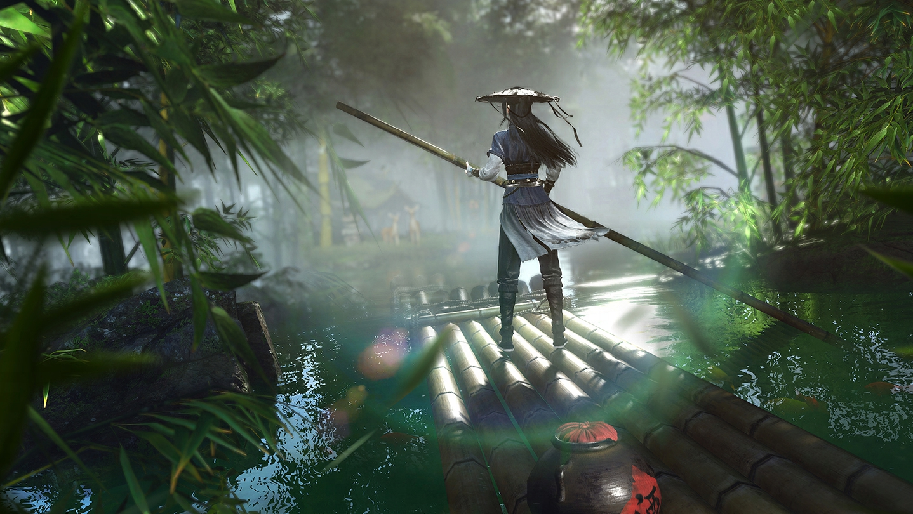
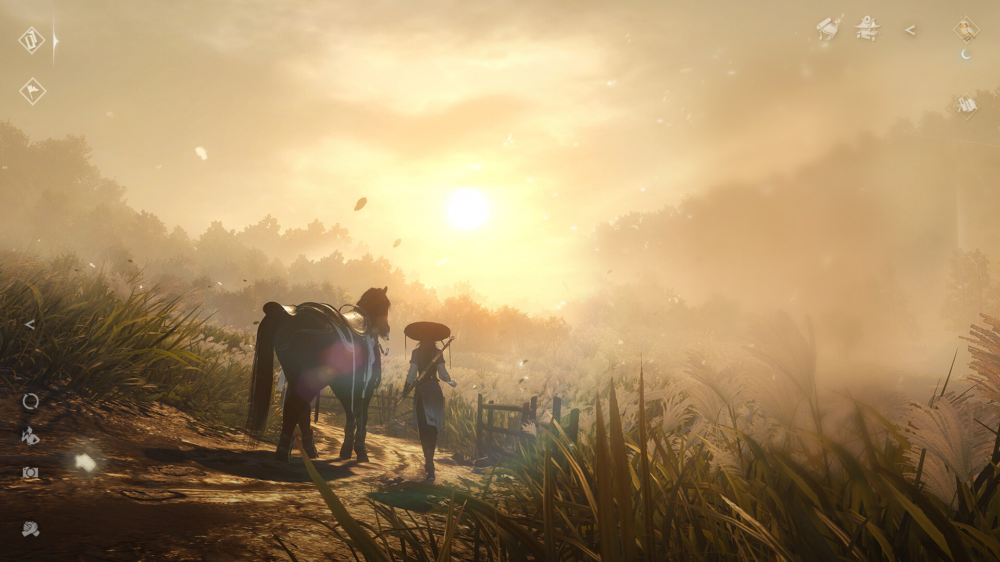

三年了，《逆水寒》为什么敢把玩家手里的牌全洗了？
《逆水寒》更新后的第三天，帮会群里最热闹的话题不是新地图有多好看，而是"我包里攒了三年的破盾词条，怎么全变成交子了？"这次大版本更新，网易没走往常那条"做加法"的老路，反而像个拆迁队，把玩家早就习以为常的养成线、经济体系一股脑推平了。在"求稳"才是主流的运营逻辑下，这操作无异于一场豪赌。玩了几天新版本，我想我大概搞懂了网易为什么要冒这个险。

策划这次掏出来的是一把叫"删"的大刀。新版本直接砍掉了打造、特质、修行点、镶嵌这些养成体系，连带破盾、气盾、命中、格挡——玩家折腾了三年的随机词条，一夜之间全部作废。与此同时，原先五花八门的货币被统一成了"交子"，随便打点什么都能产出，花起来也省心。这一刀下去，老玩家攒了三年的"家底"确实是清零了。但仔细想想，网易清掉的其实是那些折磨人的随机性和高得吓人的理解门槛。
为什么敢动玩家的"资产"？答案藏在"殊途同归2.0"这个思路里。存量竞争的时代，降低门槛比堆砌内容更紧迫。以前的MMO像高等数学，新玩家进来得先补课三个月才敢进本；现在网易想把它改成加减乘除，甭管谁来了都能直接上桌玩。统一货币、删掉冗余属性，等于把过去复杂到让人头大的"经济隔离墙"全砸了。再加上"万物出金"和赠送的30套时装、648礼包——网易这回是真金白银在买新玩家的"入场券"。

但"打碎"不是为了摆烂，是为了给新东西腾地方。这次没推新流派，反倒把承影剑系统扩展了，让它能在利刃、双刀、弓箭之间切换着适配全流派。道理也简单——清空了路面上的碎石，新车才飙得起来。再加上画质升级、大理新地图、三条串在一起的主线剧情，肉眼可见是一次"先做减法、再做加法"的品质进化。

要理解这波"反向操作"，得算一笔长线账。制作组甚至买了200多台手机专门跑测试，承诺老设备性能不降反增。在我看来，最好的长线运营不是给老玩家喂糖，而是让新玩家能毫无压力地推开这扇门。留住一个老玩家能赚多少？吸引十个新玩家又能赚多少？重做，就是为了后者——宁可短期震一下，也要把盘子撑大。
在所有人都小心翼翼地做"加法"的时候，敢用"减法"来重构游戏，这本身就是对存量市场的一次叫板。至于这步棋走不走得通，市场会给出答案。但至少，网易在暮气沉沉的MMO赛道里掀了桌子重新摆牌。对于还没进过"新世界"的人来说，这或许是最没有负担的一次入坑机会——毕竟，没人会拒绝一个愿意为你从头来过的江湖。
关于我们
📱 公众号名称：三天游戏
✍️ 作者：曾三天
扫码关注公众号，获取每日最新资讯

商务合作与版权
商务合作 / 内容投稿 / 品牌推广
请关注公众号「三天游戏」后台留言联系
版权声明：本文由作者整理，转载需注明出处。